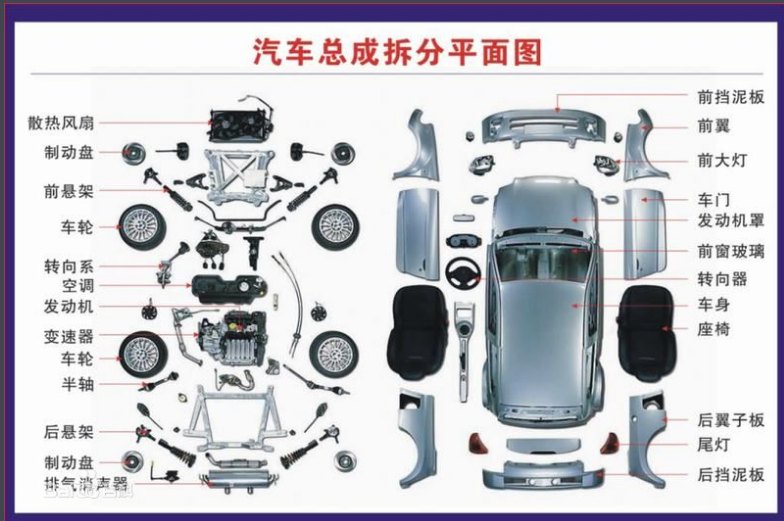
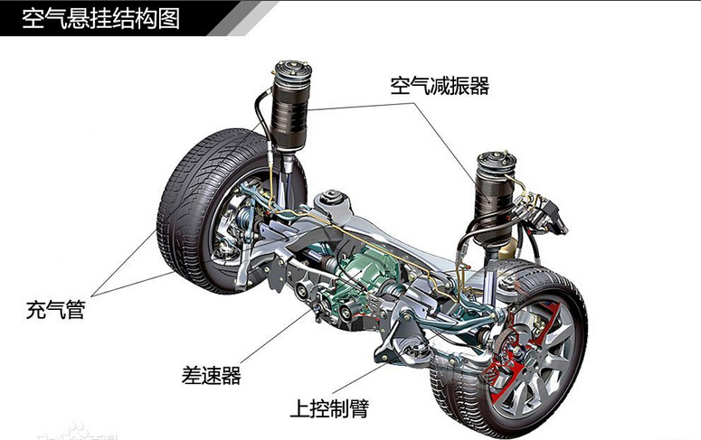

| 首页 | 发展历史 | 基本信息 | 图库 | 留言板 |
|
||
|
基本信息发动机 发动机是汽车的动力装置，由2大 汽车拆分平面图 汽车拆分平面图 机构5大系组成：曲柄连杆机构、配气机构、冷却系、燃料供给系、润滑系、点火系、起动系组成，但是柴油机比汽油机少一个点火系统。 1．冷却系：一般由水箱、水泵、散热器、风扇、节温器、水温表和放水开关组成。汽车发动机采用两种冷却方式，即空气冷却和水冷却。一般汽车发动机多采用水冷却。 2．润滑系：发动机润滑系由机油泵、集滤器、机油滤清器、油道、限压阀、机油表、感压塞及油尺等组成。 3．燃油供给系： 汽油机燃油系统包括汽油箱、汽油表、汽油管、汽油滤清器、汽油泵、化油器、空气滤清器等。 柴油机燃油系统包括喷油泵、喷油器和调速器等主要部件及柴油箱、输油泵、油水分离器、柴油滤清器、喷油提前器和高、低压油管等辅助装置。4．启动系：起动机、蓄电池。 5．点火系：火花塞、高压线、高压线圈、分电器、点火开关。 6．曲柄连杆机构：连杆、曲轴、 轴瓦、飞轮 、活塞、活塞环、活塞销、曲轴油封。 7．配气机构：汽缸盖、气门室盖罩凸轮轴、气门进气歧管、排气歧管、空气过滤器、消音器、三元催化增压器。 底盘 底盘由传动系、行驶系、转向系和制动系组成。
|
|  |
汽车网